Физика
Физика в Motif — это не отдельная симуляция мира, а расчёт анимации через физический параметр. Ключи говорят, куда объект должен прийти, а пружины, покачивание костей, сжатие и растяжение и мягкие тела решают, как он туда придёт: с перелётом, с отставанием, сминаясь. Частицы разбрасывают копии фигуры: искры, дым, пыль. Верёвки и ткань провисают, качаются и полощутся на ветру, жидкости текут и плещутся. Всё это падает туда, куда тянет гравитация сцены, сносится её ветром и слушается притяжения и вентиляторов.
Пружины и покачивание
Пружина (spring) есть у любого объекта и группы. Ключи положения, размера, масштаба, поворота и наклона больше не исполняются точно: объект догоняет их на пружине, проскакивает и успокаивается. Достаточно поставить резкие ключи — «поп», отскок и дрожь после остановки посчитаются сами. Цвет и прозрачность пружина не трогает.
Покачивание (jiggle) есть у костей. Кость отстаёт от движения родительской кости и раскачивается после её остановки: хвосты, уши, волосы, антенны, верёвочки. Цепочка костей с покачиванием даёт волну по хвосту. Длина кости не меняется, кожа (skin) гнётся вслед.

springs.msc: у тела только ключи прыжка. Хвост из трёх костей с jiggle отстаёт и закручивается после приземления, кнопка выпрыгивает с перелётом благодаря spring.
| Поле | В скрипте | Что делает |
|---|---|---|
| Пружина | spring | Ключи догоняются на пружине. |
| Покачивание | jiggle | Только у костей: отставание и раскачивание. |
| Частота | spring 3 | Колебаний в секунду, до 30. Больше — тугая быстрая пружина, меньше — ленивая. |
| Затухание | spring 3 0.3 | 0 — качается долго, 0.3 — пара отскоков, 1 и больше — догоняет без перелёта. |
- Поп кнопки. Масштаб 0 → 1 ключами с
hold, у кнопкиspring 3 0.35. - Тяжёлый прыжок. Ключи положения без смягчения,
spring 2 0.5: объект немного проседает после остановки. - Хвост, уши. Цепочка костей, у каждой
jiggle 2.5 0.4; для упругой антенныjiggle 3 0.12.
Сжатие и растяжение
Сжатие (squash) есть у любого объекта и группы. На скорости объект вытягивается по ходу движения и сужается поперёк, при резкой остановке или отскоке сплющивается и вздрагивает обратно. Площадь не меняется, поэтому мяч выглядит упругим, а не надутым. Растяжение следует за скоростью на пружине: удар о пол качает её за ноль, в сплющивание.
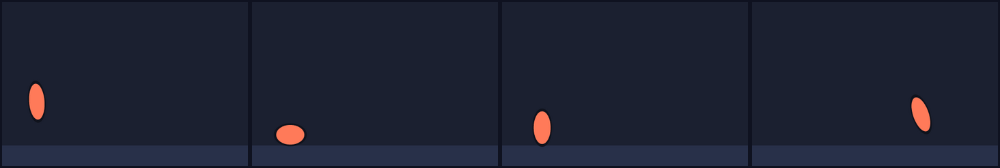
squash.msc: у мяча только ключи прыжков и два кадра на полу (hold). Вытягивание, сплющивание и наклон по ходу посчитаны.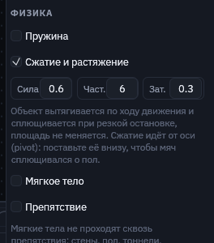
| Поле | В скрипте | Что делает |
|---|---|---|
| Сжатие и растяжение | squash | Включает, с силой 0.5, частотой 4 и затуханием 0.3. |
| Сила | squash 0.6 | Насколько тянет скорость: 1 — вдвое длиннее при 1000 единиц в секунду. 0 — только сплющивание от ударов. |
| Частота | squash 0.6 6 | Как быстро форма догоняет скорость. Больше — резкий удар, меньше — желе. |
| Затухание | squash 0.6 6 0.3 | Сколько форма вздрагивает после удара. |
- Ось внизу. Сжатие идёт от оси (
pivot). У мяча поставьте ось на нижний край (pivot 0 25для мяча 50): он сплющивается о пол, а не в воздухе. - Кадры контакта. Удар чувствуется, когда движение резко останавливается. Пара кадров на полу с
holdдаёт сочное сплющивание. - Вместе с пружиной.
springплюсsquashу кнопки: выпрыгивает, тянется в прыжке и пружинит при остановке.
Частицы
Частицы (emit) делают из любой фигуры источник: пока играет анимация, из неё вылетают её копии, падают, крутятся, растут или сжимаются и гаснут. Искры, дым, пыль, листья, дождь, магия, хвост кометы. Сама фигура не рисуется, она задаёт вид частицы: её заливку, обводку, градиент и размер. Источник двигается ключами или висит на кости, частицы остаются там, где вылетели.
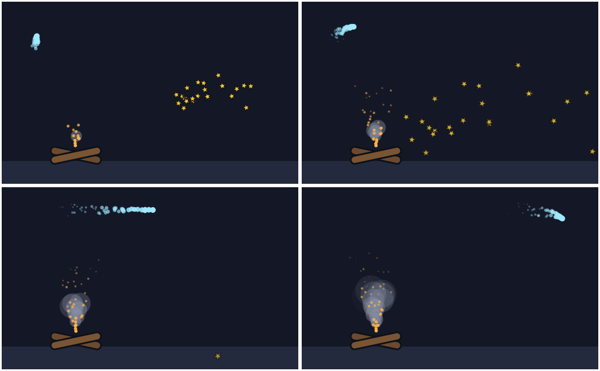
particles.msc: у костра два источника, искры летят вверх и гаснут, дым растёт и тает. Комета едет по ключам и оставляет хвост. Звёздочки вылетают залпом (burst) при старте и падают.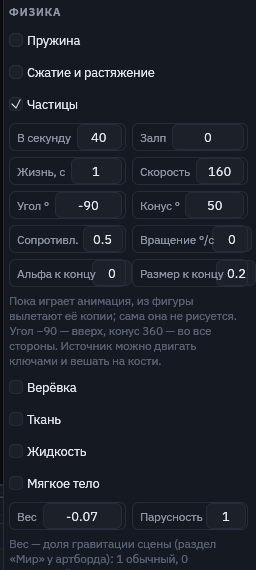
| Поле | В скрипте | Что делает |
|---|---|---|
| В секунду | emit 30 | Сколько частиц вылетает за секунду. Просто emit — 20. |
| Залп | burst 24 | Сколько вылетает разом в начале анимации. Для взрыва: emit 0 burst 40. |
| Жизнь | life 1 | Секунд живёт частица, с разбросом в четверть. |
| Скорость | speed 120 | Начальная скорость, единиц в секунду, с разбросом в четверть. |
| Угол | angle -90 | Куда летят, в градусах: 0 — вправо, −90 — вверх, 90 — вниз. Поворот источника тоже учитывается. |
| Конус | spread 30 | Ширина разлёта в градусах; 360 — во все стороны. |
| Вес | weight 0.5 | Доля гравитации сцены; меньше нуля — частицы всплывают. По умолчанию 0. |
| Сопротивление | drag 0.5 | Какую долю скорости частица теряет за секунду, 0–1. |
| Альфа к концу | fade 0 | Прозрачность в конце жизни относительно начала: 0 — гаснет, 1 — не гаснет. |
| Размер к концу | grow 1 | Размер в конце жизни: 0 — сжимается в точку, 3 — растёт втрое. |
| Вращение | spin 360 | Наибольшая скорость вращения, градусов в секунду; каждой частице достаётся своя. |
- Повторяемость. Случайность каждой частицы задана её номером, поэтому одно и то же время всегда даёт ту же картинку: перемотка, экспорт и игра совпадают кадр в кадр.
- Дым. Мягкий круг с прозрачностью,
speed 40 drag 0.3 grow 3.5 fade 0 life 2.5. - Хвост. Источник едет по ключам, у частиц малая скорость и
spread 360: они остаются на пути и тают. - Предел. У одного источника живут не больше 2000 частиц.
Верёвки, цепи и ткань
Верёвка (rope) делает контур фигуры цепочкой точек на равных расстояниях. Она провисает, качается, ложится на препятствия и полощется на ветру. Обычно это открытый контур, нарисованный пером, с обводкой. Закреплённые концы (pin) следуют за фигурой, так что верёвку можно вешать на группу или кость и двигать ключами. tie привязывает конец к другому объекту: верёвка тянется между двумя персонажами.
Ткань (cloth) делает из фигуры сетку, закреплённую по краям или в углах: флаг, занавеску, плащ, вывеску. Ткань сопротивляется растяжению и легко сминается, поэтому выглядит как складки в глубину, хотя считается в плоскости. Заливка и обводка рисуются по согнутому контуру.
На верёвке можно подвесить объект (hang): фонарь, гирю, флажки гирлянды. Объект цепляется к верёвке своей осью (pivot), на конце поворачивается вместе с верёвкой и утяжеляет её. Фигура с links рисуется звеньями цепи вдоль верёвки, каждое второе звено повёрнуто боком.
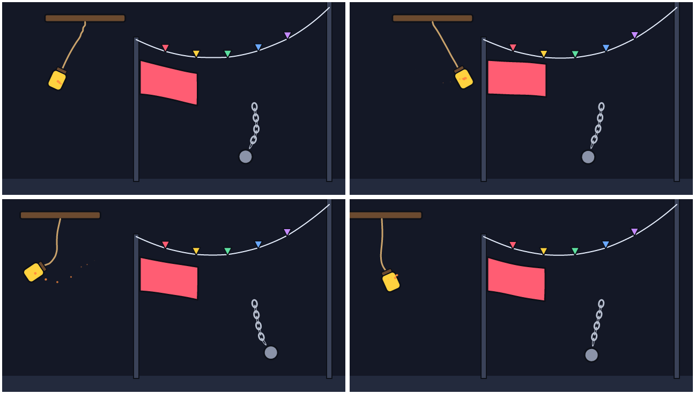
ropes.msc: у балки только ключи положения, фонарь качается на шнуре сам. Гирлянда закреплена с двух концов и раскачивается на ветру, флажки висят на ней через hang. Флаг — ткань, закреплённая левым краем. Цепь нарисована одним звеном через links, гиря висит на её конце.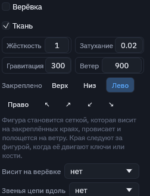
| Поле | В скрипте | Что делает |
|---|---|---|
| Верёвка / Ткань | rope, cloth | Контур становится верёвкой или сеткой ткани. |
| Жёсткость | rope 0.8 | Какую часть растяжения верёвка забирает за кадр, 0–1. 1 — не тянется, меньше — резинка. |
| Затухание | rope 1 0.05 | Как быстро гаснет раскачивание, 0–1. По умолчанию 0.02. |
| Вес, парусность | weight 1 sail 2 | Доля гравитации и ветра сцены. По умолчанию 1 и 1. |
| Свой ветер | wind 300 | Порывы ветра только для этой верёвки или ткани: вправо, меньше нуля — влево. Идёт волнами вдоль неё и складывается с ветром сцены. |
| Закреплено | pin start end | У верёвки — концы start, end, по умолчанию начало. У ткани — края top bottom left right и углы top-left top-right bottom-left bottom-right, по умолчанию верх. pin none — ничего. |
| Конец держит | tie hand, tie a b | Конец верёвки привязан к оси объекта; с двумя id — начало к первому, конец ко второму. |
| Висит на верёвке | hang rope 0.5 | Объект висит на верёвке: 0 — начало, 1 — конец (по умолчанию). |
| Звенья цепи вдоль | links chain | Фигура рисуется копиями-звеньями вдоль верёвки. |
- Провис. Верёвка с двумя закреплёнными концами держит свою нарисованную длину. Нарисуйте её с провисом (кривой), и она будет висеть свободно. Прямая верёвка между двумя точками натянута.
- Фонарь. Шнур внутри группы с балкой, фонарь — группа с
pivotна крышке иhang cord. Двигайте балку ключами, фонарь раскачается сам. - Правила ткани. Ткань не растягивается (сколько именно — решает жёсткость), но сжимается: так в плоскости выглядит складка в глубину. Сжаться клетка сетки может до трети своей площади, но не вывернуться наизнанку, поэтому на краю не бывает зазубрин. Резкие изломы сглаживаются, складки получаются плавными волнами.
- Ткань на ветру не просто сдувается: по ней бегут волны поперёк ветра от закреплённого края к свободному и растут к концу. Чем сильнее ветер (свой, сцены, вентилятор) и чем больше парусность, тем сильнее полощется.
- В Design верёвки и ткань нарисованы как есть, подвешенные объекты и звенья стоят на нарисованной верёвке. Физика работает в Animate, при проигрывании и экспорте.
Жидкости
Жидкость (fluid) заполняет фигуру водой. Вода — множество капель, которые держат ровную плотность, падают, плещутся, растекаются и упираются в препятствия (solid). Рисуется она не точками, а одним гладким контуром вокруг капель (метаболы, обведённые в векторный путь) с заливкой и обводкой самой фигуры. Так получается мультяшная вода с чистым краем, которая хорошо пикселизуется.
С потоком (flow) фигура не заполняется, а льёт: капли выходят из её нижнего края вниз по самой фигуре, как из крана. Повёрнутая фигура льёт вбок, движущаяся несёт поток за собой. Вязкость делает из воды мёд или краску: капли тянут соседей за собой и липнут к препятствиям.
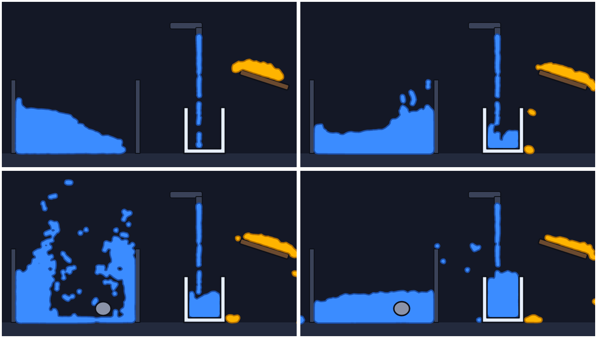
fluids.msc: столб воды в аквариуме обрушивается и выравнивается, камень (препятствие с ключами) падает в воду и поднимает брызги. Кран льёт в чашку (flow 50), мёд (fluid 0.6) медленно сползает с доски.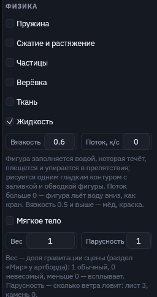
| Поле | В скрипте | Что делает |
|---|---|---|
| Жидкость | fluid | Фигура заполняется водой, пока играет анимация. |
| Вязкость | fluid 0.6 | 0 — вода, 0.5 — сироп, 1 — почти не течёт. По умолчанию 0.1. |
| Поток | flow 60 | Капель в секунду: фигура льёт вместо того, чтобы заполниться. |
| Вес, парусность | weight 1 sail 1 | Доля гравитации и ветра сцены. По умолчанию 1 и 1. |
- Сосуды. Чашка, аквариум, русло — обычные фигуры с
solid. Чашку удобно нарисовать одним контуром-«U» с толстыми стенками. Препятствия можно двигать ключами и костями: камень, ложка, лопасть мешают воду. - Размер капли. Капли идут примерно через 6 единиц. В большой фигуре они крупнее, чтобы их было не больше 2500. Мелкие детали воды меньше капли не видны.
- Разные жидкости друг с другом не смешиваются и не сталкиваются: каждая течёт сама по себе.
- Скорость. Вода — самая тяжёлая часть физики. Секунда большого аквариума считается за доли секунды, но длинную сцену с тысячами капель лучше запекать в кадры при экспорте.
Гравитация и ветер
У сцены есть мир (world): куда всё падает и куда дует ветер. Его слушаются частицы, мягкие тела, верёвки, ткань, вода и то, что катится по шару. Каждый объект берёт свою долю: вес (weight) решает, насколько его тянет гравитация, парусность (sail) решает, сколько ветра он ловит. Гравитацию и ветер можно анимировать ключами, как любое свойство: ветер нарастает до бури, гравитация на миг пропадает или поворачивается.
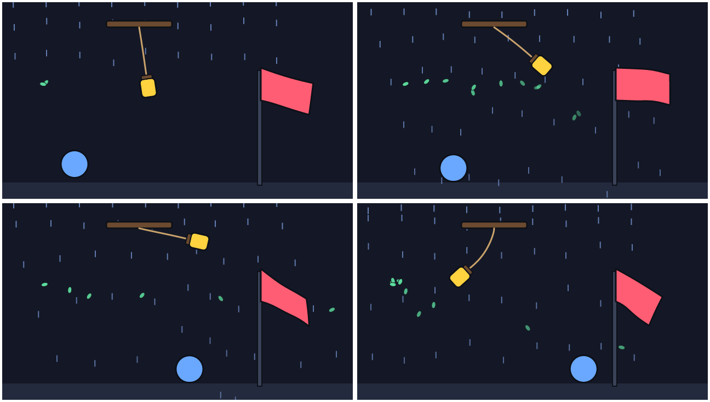
world.msc в кадрах 0.8, 2.5, 3.8 и 5.3 с. Ветер ключами нарастает до бури: лёгкие листья (вес 0.08) летят по ветру, флаг (парусность 4) вытягивается, фонарь отклоняется, мяч катится по земле. На 5-й секунде гравитация пропадает, и фонарь взлетает.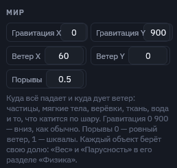
| Поле | В скрипте | Что делает |
|---|---|---|
| Гравитация X, Y | world gravity 0 900 | Куда и как сильно тянет, в единицах артборда за секунду². 0 900 — вниз, как без строки world. 0 −300 — всё всплывает, 400 0 — падает вправо. |
| Ветер X, Y | wind 200 0 | Куда и как сильно дует, в тех же единицах: 200 0 — вправо. |
| Порывы | gust 0.4 | 0 — ровный ветер, 1 — шквалы. Порывы бегут по сцене волнами и немного поворачивают ветер, поэтому соседние объекты качаются вразнобой. |
| Ключи | world.wind-x 0: 0 | 2: 600 | Свойства мира для ключей: gravity-x, gravity-y, wind-x, wind-y, gust. В Animate ромб у поля ставит ключ, на таймлайне они в строке «Мир». |
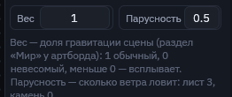
| Поле | В скрипте | Что делает |
|---|---|---|
| Вес | weight 0.5 | Доля гравитации сцены: 1 обычный, 0 невесомый, 2 вдвое тяжелее, меньше 0 — всплывает. |
| Парусность | sail 3 | Сколько ветра ловит: 1 обычно, 3 — лист или флаг, 0 — камень, ветра не замечает. |
- Вес по умолчанию. Верёвки, ткань, вода и то, что катится по шару, весят 1. Частицы и мягкие тела весят 0: они двигаются, как велят ключи и скорость, пока вы не дадите им вес.
- Старые сцены. Прежнее
gravity 500у объекта читается как вес 500/900 и поворачивается вместе с гравитацией сцены. Если заданweight, он главнее. - Свой ветер верёвки.
windу верёвки или ткани (поле «Свой ветер») дует только на неё и складывается с ветром сцены. - Ветер — это сила. Он разгоняет объект, как гравитация. Чтобы частицы не разгонялись бесконечно, дайте им сопротивление (
drag).
Притяжение и вентиляторы
Любой объект может стать точкой притяжения (pull) или вентилятором (fan). Притяжение тянет к себе всё, что считает физика, а с силой меньше нуля отталкивает. Вентилятор дует туда, куда повёрнут объект. Оба двигаются и поворачиваются вместе со своим объектом, а силу можно анимировать ключами: так делаются чёрная дыра, магнит, взрывная волна, сквозняк в дверь.
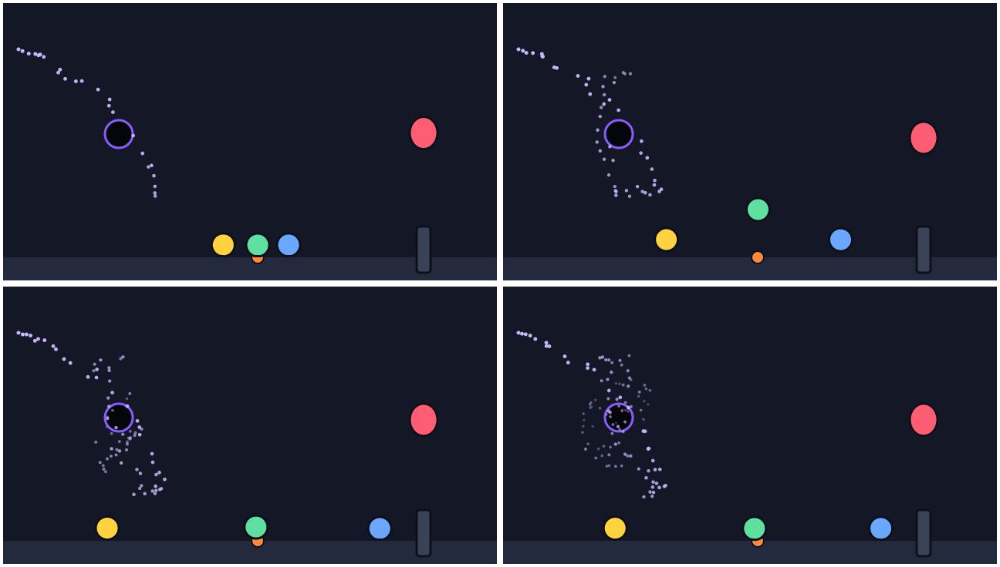
fields.msc в кадрах 0.8, 1.7, 2.6 и 3.9 с. Пыль пролетает мимо чёрной дыры и закручивается вокруг неё. На 1.5 с центр на миг отталкивает с силой −9000, и мячи разлетаются. Шарик весом 0.9 парит в струе вентилятора.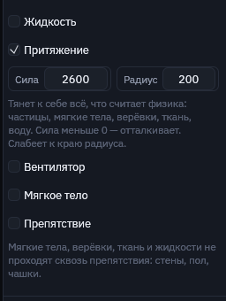
| Поле | В скрипте | Что делает |
|---|---|---|
| Притяжение | pull 2000 | Сила у центра, в единицах артборда за секунду². Меньше 0 — отталкивает. Ключи: hole.pull 0: 0 | 1: 4000. |
| Вентилятор | fan 600 | Сила струи. Дует по оси объекта: поворот 0 — вправо, −90 — вверх. Меньше 0 — всасывает. Ключи: fan.fan. |
| Радиус | range 300 | Докуда достаёт; сила слабеет к краю до нуля. |
| Конус | cone 40 | Ширина струи вентилятора в градусах; к краям струя слабее. |
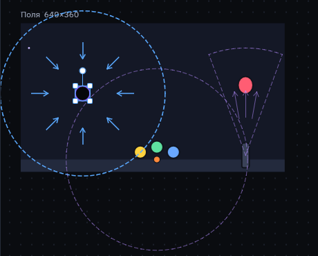
- Кого тянет. Притяжение действует на всё, что считает физика, независимо от веса. Вентилятор, как ветер, умножается на парусность.
- Без трения тела раскачиваются. Притяжение без потерь гоняет частицу через центр туда и обратно, как маятник. Чтобы её затягивало внутрь, дайте частицам сопротивление (
drag), а мягким телам — затухание. - Объект не тянет сам себя. Мягкое тело с
pullпритягивает другие тела, но не собственный контур.
Мягкие тела
Мягкое тело — фигура, форму которой считает физика. Ключи говорят, куда тело тянут, а как оно при этом сожмётся, отстанет, сплющится о пол или протиснется в щель, решают упругость, давление и трение. Препятствия — обычные фигуры с пометкой «Препятствие». Фигура остаётся вектором: физика двигает точки её контура.

tunnel.msc: у шара один ключ — движение вправо. Сжатие в тоннеле и восстановление формы посчитаны.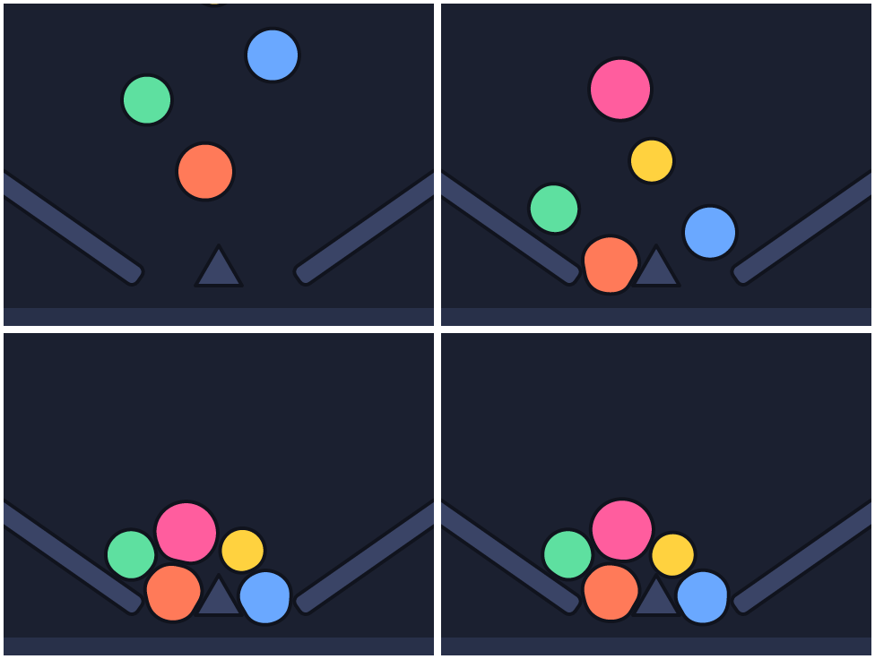
jelly.msc: шарики сталкиваются не только с чашей и пиком, но и друг с другом. В месте касания мнутся оба.Как это работает
- Контур тела становится кольцом точек примерно через каждые 5 единиц. Точки тянутся к нарисованной форме (упругость), всё кольцо держит свою площадь (давление), а изгиб контура между соседними точками сглаживается, поэтому вмятины получаются круглыми, без изломов.
- Столкновения по краю. Препятствие выталкивает не только точки тела, но и сам контур между ними: острый угол или пик продавливает в теле ямку и не протыкает его. Точка, которая за шаг влетела в препятствие, выходит с той стороны, откуда пришла, поэтому тонкие стенки не пробиваются насквозь. Если нарисованная форма тела не помещается (щель уже тела), тело стремится к ближайшей форме, которая помещается, и обтекает углы, а не цепляется за них.
- Тела друг с другом. Мягкие тела сталкиваются между собой: контур каждого — стенка для остальных, и в месте касания уступают оба. Трение действует и между телами. Обводка учитывается, как и у препятствий.
- Пружины, покачивание, сжатие, верёвки, ткань, жидкости, частицы и мягкие тела считаются вместе. Расчёт идёт от начала анимации шагами по 1/600 секунды. Одно и то же время всегда даёт одну и ту же позу, поэтому таймлайн можно перематывать как обычно. Посчитанные кадры запоминаются, и перемотка назад ничего не пересчитывает.
- В Design тело показано таким, как нарисовано. Физика работает в Animate, при проигрывании и при экспорте: кадры экспорта получают уже посчитанную форму, в игре ничего пересчитывать не нужно.
- Препятствия могут двигаться ключами или костями: тело чувствует их там, где они на этом кадре. Обводка учитывается, тело останавливается у её края.
Раздел «Физика»

| Поле | В скрипте | Что делает |
|---|---|---|
| Мягкое тело | soft | Включает физику для фигуры. |
| Упругость | soft 0.5 | Как быстро тело возвращает нарисованную форму, 0–1. Мало — желе, много — резиновый мяч. |
| Давление | pressure 1 | Площадь относительно нарисованной. 1 — тело не худеет, сжатое в одном месте выпирает в другом. Меньше 1 — сдувается. |
| Трение | friction 0.3 | Насколько тело тормозит, скользя по препятствию или другому телу, 0–1. Доля скорости скольжения, которую тело теряет за кадр. |
| Затухание | damp 0.05 | Как быстро гаснут колебания, 0–1. |
| За ключами | drive 0.3 | Насколько тело следует своим ключам положения и угла, 0–1. 1 — центр точно по ключам, форма при этом всё равно мнётся. 0 — ключи не действуют, тело движет только гравитация. |
| Вес | weight 1 | Доля гравитации сцены. По умолчанию 0: тело невесомо и движется за ключами. |
| Препятствие | solid | У любой фигуры: мягкие тела, верёвки, ткань и жидкости сквозь неё не проходят. |
Рецепты
- Протиснуться в щель. Препятствия по бокам, у тела ключ положения на другую сторону,
soft 0.1–0.2,drive 0.3–0.5. - Капля падает и плющится. Пол — прямоугольник с
solid, у каплиweight 1 drive 0 soft 0.2. - Тяжёлый мягкий мяч.
soft 0.6 pressure 1 damp 0.02: долго вздрагивает после удара. - Горка желе. Несколько тел с
weight 1 drive 0 soft 0.15–0.3над чашей из двух повёрнутых прямоугольников сsolid. - Отстающий хвост. Тело с
drive 0.15догоняет свои ключи с запаздыванием и вытягивается по ходу.
В скрипте
rect top at 240 86 size 140 84 solid
rect bottom at 240 214 size 140 84 solid
ellipse ball at 70 150 size 70 soft 0.12 friction 0.2 drive 0.4
rect button size 120 44 spring 3 0.35
world gravity 0 900 wind 200 0 gust 0.4
ellipse leaf size 12 7 emit 6 weight 0.1 sail 1.2
ellipse hole pull 2600 range 200
rect fan rot -90 fan 2000 range 260 cone 40
bone tail len 30 jiggle 2.5 0.4
ellipse ball size 50 pivot 0 25 squash 0.6 6 0.3
anim Squeeze 3s {
ball.x 0: 70 | 3: 410
world.wind-x 0: 0 | 3: 600
}В машине состояний физика считается на ходу, пока машина играет: резкая смена состояния тоже смягчается пружинами. В повторяющейся анимации расчёт начинается заново с каждым кругом.